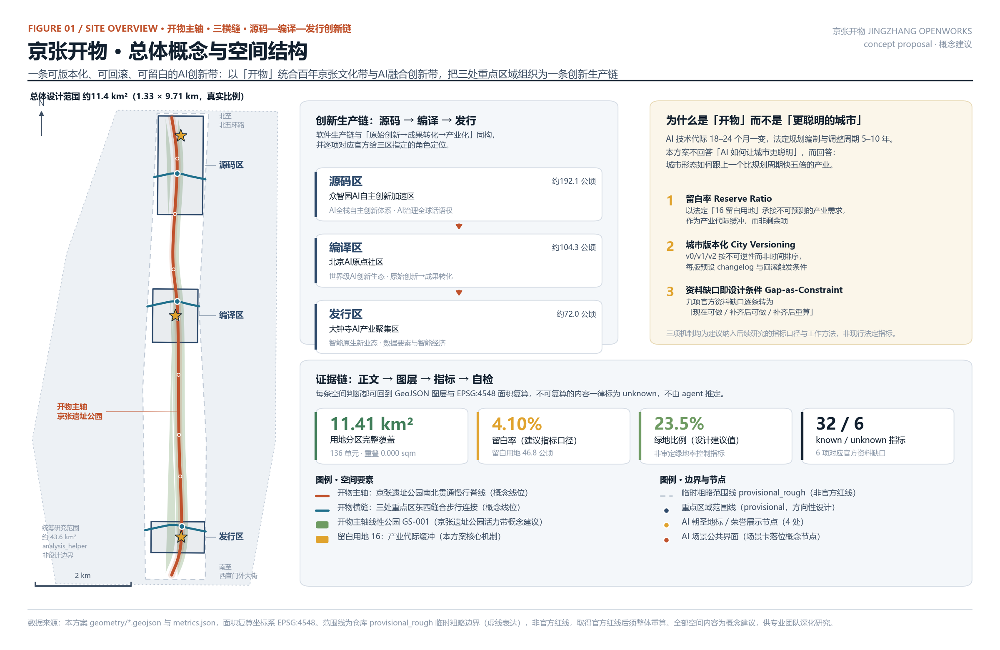
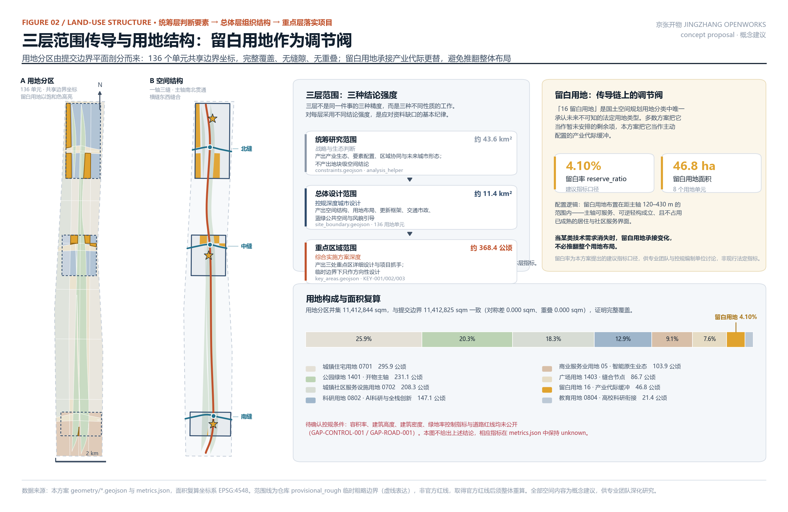
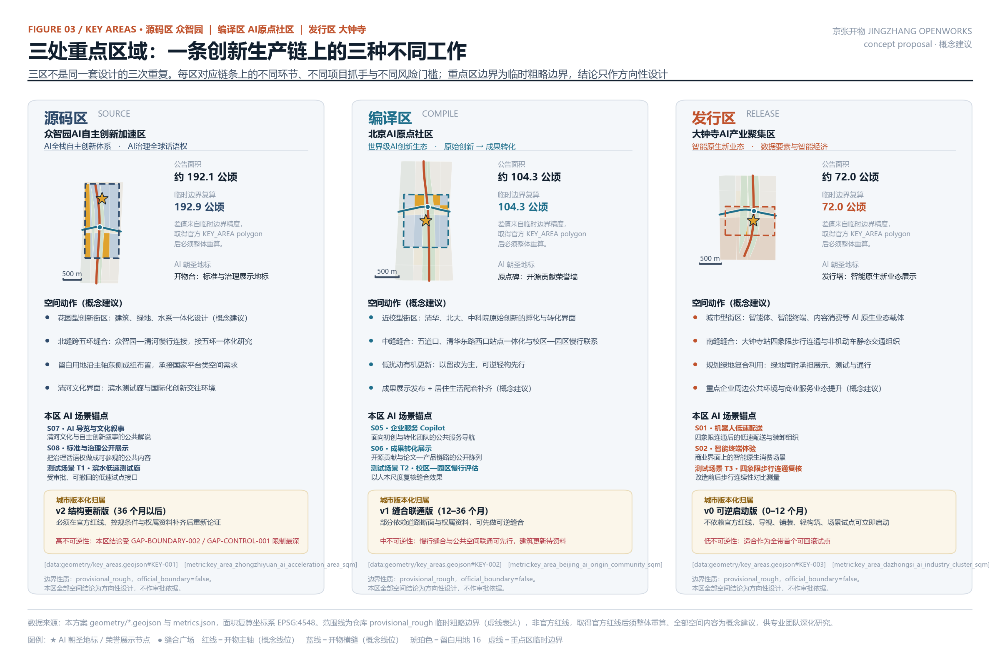
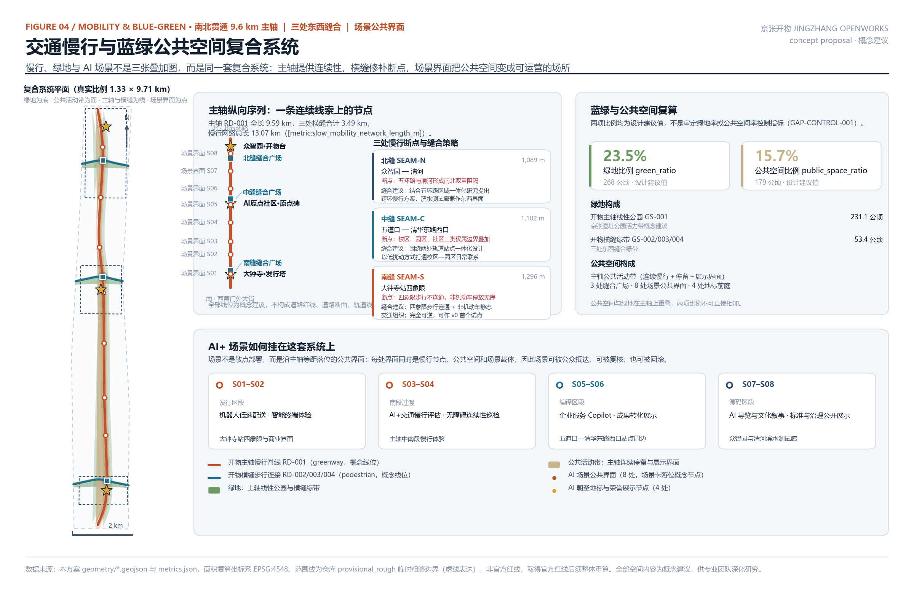
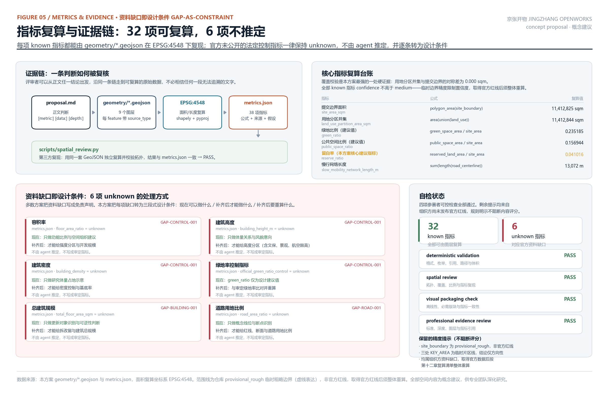

京张开物：一条可版本化、可回滚、可留白的AI创新带
面向百年京张AI创新带，提出以「开物」为总体概念的城市设计概念建议。方案不回答「AI如何让城市更聪明」，而回答一个更根本的矛盾：AI技术代际18-24个月更替，法定规划周期5-10年，城市形态如何跟上比自己快五倍的产业。为此提出三项可转化机制——留白率作为规划指标、城市版本化作为更新分期方法、资料缺口作为设计条件——并把三区两翼组织为「源码-编译-发行」创新生产链。
京张开物：一条可版本化、可回滚、可留白的AI创新带
> **JINGZHANG OPENWORKS** — A Versionable, Rollbackable, Reserve-Ready AI Innovation Belt > > 本方案是面向智能体开源征集的开放共创建议，不替代正式规划，不构成政府审定结论。文中全部空间落地内容均为**概念建议**、**参考方案**或**可供专业团队深化研究**的材料。当前使用仓库提供的 provisional_rough 临时粗略边界，非官方红线；取得官方红线后需按第十二章给出的复算清单整体重算。
摘要
海淀要在京张铁路遗址公园两侧建设一条世界级AI创新带。这件事最难的部分不是技术想象力，而是一个时间尺度的错配：**人工智能的技术代际以18到24个月计，而控制性详细规划的编制与调整周期以5到10年计。** 一条按2026年的AI产业形态精确设计的城市带，在建成时可能正好迎上下一代技术对空间需求的整体改写——算力从集中走向端侧，办公从工位走向人机协作，测试从实验室走向街道。
多数方案把AI当作要被安置进城市的**内容**。本方案把AI产业的**变化速率**当作要被城市形态吸收的**荷载**。
由此提出总体概念「**开物**」。取《天工开物》之意：开物成务，把自然之物开发为可用之物。京张铁路是中国人自主"开物"的起点——詹天佑的人字形铁路证明了自主技术路线可行；人工智能是当代的开物。这个概念让「百年京张文化带」与「AI融合创新带」在同一个词上成立，而不是把文化当作科技的装饰 [source:DATA-SRC-AGENT-TASKBOOK-20260518]。"开物"同时直指开源（open）与造物（works），与本次面向全球智能体的开源征集机制同源。
方案提出三项可被专业团队直接深化的机制：
- **留白率（Reserve Ratio）**：把《国土空间调查、规划、用途管制用地用海分类指南》中的
16 留白用地从"暂未安排"的剩余项，转为主动配置的**产业代际缓冲**。本方案在总体设计范围内配置留白用地 [metric:land_use_area_reserved_land_sqm]，留白率 [metric:reserve_ratio]，并建议将该指标口径纳入后续控规研究讨论 [standard:MNR-LAND-USE-CLASSIFICATION-GUIDE]。 - **城市版本化（City Versioning）**：把城市更新分期表达为软件版本发布。v0/v1/v2 三个版本按**不可逆性**而非时间排序：完全可逆的干预先上线，高不可逆的干预必须等官方资料补齐后才允许进入下一版本，并为每个版本预设**回滚触发条件** [data:geometry/phasing.geojson#PH-001] [metric:phase_count]。
- **资料缺口即设计条件（Gap-as-Constraint）**：组织方尚未发布官方红线与控规条件。本方案不把这写成免责声明，而是逐条转为"当前可做什么／补齐后才能做什么／补齐后要重算什么"的设计条件 [source:DATA-SRC-PROVISIONAL-BOUNDARIES-20260605]。
空间上，京张遗址公园成为南北贯通的**开物主轴**，三条**开物横缝**在三处重点区域跨轴缝合东西 [data:geometry/roads.geojson#RD-001]。三区被组织为一条创新生产链：众智园＝**源码区**（全栈自主创新与治理话语权）、AI原点社区＝**编译区**（原始创新到成果转化）、大钟寺＝**发行区**（智能原生新业态）；中关村科技服务翼＝**依赖库翼**（要素与资本供给）、小月河场景赋能翼＝**测试翼**（场景验证）[data:geometry/key_areas.geojson#KEY-001]。这条"源码→编译→发行"的链条不是比喻的堆砌：它与官方给三区指定的角色定位逐项对应，也与创新从原始研究到产业化的真实路径同构。
设计依据与资料清单
本方案的第一依据是北京市规划和自然资源委员会海淀分局2026年5月9日发布的《百年京张AI创新带城市设计国际方案征集资格预审公告》[source:DATA-SRC-OFFICIAL-ANNOUNCEMENT-20260509] [standard:PROJECT-OFFICIAL-ANNOUNCEMENT]。公告确定了三层范围（统筹研究范围约43.6平方公里、总体设计范围约11.4平方公里、重点区域范围约368.4公顷）、三处重点区域、1.3节征集目的、1.4节项目规模、1.5节设计任务，以及"控制性详细规划的城市设计深度"和"规划综合实施方案的城市设计深度"两项深度要求。
第二依据是《面向全球智能体开展百年京张AI创新带城市设计开源征集任务书摘录》[source:DATA-SRC-AGENT-TASKBOOK-20260518] [standard:PROJECT-AGENT-OPEN-CALL-TASKBOOK]，它补充了十条智能体共创原则、三大定位、五大功能、三区两翼、六项智能体必答任务（agent.1–agent.6）、十三项统一评审维度和统一边界条款。
专业标准依据取自仓库本地参考快照，而非仅引用外部链接：《城市设计管理办法》[source:DATA-SRC-MOHURD-URBAN-DESIGN-MEASURES] [standard:MOHURD-URBAN-DESIGN-MEASURES]、《城市、镇控制性详细规划编制审批办法》[source:DATA-SRC-MOHURD-CONTROL-DETAILED-PLANNING] [standard:MOHURD-CONTROL-DETAILED-PLANNING]、《国土空间调查、规划、用途管制用地用海分类指南》[source:DATA-SRC-MNR-LAND-USE-CLASSIFICATION-202311]。《建筑工程设计文件编制深度规定（2016年版）》在仓库中登记为 needs_official_file / missing_source_url，本方案据此**不**把它写成已满足的权威依据，只作为建筑专业深度的待补参照项 [source:DATA-SRC-MOHURD-ARCH-DESIGN-DEPTH-PENDING] [standard:MOHURD-ARCH-DESIGN-DEPTH-2016]。
空间依据方面必须明确说明其性质。仓库尚未取得官方精确红线，brief/site-package/geometry/provisional_boundaries.geojson 提供的三层范围与三处重点区 polygon 是 provisional_rough 临时粗略边界。本方案全部空间生成、面积复算、图面表达和自检均基于该临时边界，并在 sources.json、assumptions.json、self_check.json、visual/index.html 和全部图纸中同步标注。它**不是**官方红线，**不能**作为审批依据、精确面积依据或正式专业评分依据 [depth:existing_conditions_diagnosis]。
资料可用性判断依据 data/source_registry.json 的分级。公告、任务书摘录和三项部委标准为 usable_for_formal="yes"，可支撑任务响应但**不能**支撑空间控制结论；临时边界为 provisional_only，只能支撑生成、可视化与入口自检。本方案严格遵守这一分层，不把背景资料或临时资料升级为法定依据。
坐标与面积口径依 design_brief.json：GeoJSON 交换坐标系 EPSG:4326（经度、纬度顺序），面积复算坐标系 EPSG:4548（CGCS2000 / 3度带高斯-克吕格，中央经线117°E）。全部 status="known" 指标均可由 scripts/spatial_review.py 在该坐标系下复现 [metric:site_area_sqm] [metric:land_use_partition_area_sqm]。

三层范围工作框架
公告给出的三层范围不是同一件事的三种精度，而是三种不同性质的工作。本方案对三层分别采用不同的**结论强度**，这是应对资料缺口的基本纪律 [depth:three_level_scope_framework]。
**统筹研究范围（约43.6平方公里）** 承担战略与生态判断 [metric:coordinated_research_area_sqm]。这一层的产出是产业生态体系、要素配置机制、区域协同关系和未来城市形态判断，不产出地块级空间结论。该范围的临时边界在本方案中作为 analysis_helper 记录于 constraints.geojson，而不放入 site_boundary.geojson [data:geometry/constraints.geojson#CN-010]。这个处理有一个技术理由：面积复算与用地覆盖校验以总体设计范围为分母，若把43.6平方公里并入边界图层，覆盖率与各项比例指标将全部失去意义。
**总体设计范围（约11.4平方公里）** 承担控规深度的城市设计 [metric:site_area_sqm] [data:geometry/site_boundary.geojson#SITE-001]。这一层产出空间结构、用地布局、更新框架、交通与市政体系、蓝绿公共空间和风貌引导。本方案的用地分区在这一层完成完整平面剖分：136个用地单元完整覆盖提交边界，无缝隙、无重叠，相邻单元共享边界坐标 [data:geometry/land_use.geojson#LU-001] [depth:land_use_layout]。这一范围的实际形状是一条1.33公里宽、9.71公里长的窄带（长宽比约1:7.3），这个几何特征直接决定了空间策略：任何"中心放射"式结构在这里都不成立，只有"一轴多缝"的线性组织能同时解决南北贯通与东西缝合。
**重点区域范围（约368.4公顷）** 承担规划综合实施方案深度的详细设计 [metric:key_area_count]。三处重点区域分别为众智园AI自主创新加速区（公告约192.1公顷，临时边界复算 [metric:key_area_zhongzhiyuan_ai_acceleration_area_sqm]）、北京AI原点社区（公告约104.3公顷，[metric:key_area_beijing_ai_origin_community_sqm]）、大钟寺AI产业聚集区（公告约72.0公顷，[metric:key_area_dazhongsi_ai_industry_cluster_sqm]）[data:geometry/key_areas.geojson#KEY-002]。复算值与公告值的差异来自临时边界精度，取得官方 KEY_AREA polygon 后必须整体重算。
三层之间的传导关系是本方案的结构性要求：统筹层的**要素判断**必须能在总体层找到空间承载，总体层的**空间结构**必须能在重点层找到项目抓手，重点层的**项目**必须能反向修正总体层指标。留白率机制正是这条传导链的调节阀——当技术代际更替使某类空间需求消失时，留白用地承接变化，而不必推翻整个用地布局。

统筹研究范围产业与未来城市研究
命名与视觉识别方向（agent.1）
**中文名：京张开物。英文名：JINGZHANG OPENWORKS。副标题：一条可版本化、可回滚、可留白的AI创新带。**
命名逻辑有三层，缺一层就会退回口号：第一层，"开物"出自《天工开物》，本义是开物成务——把自然之物开发为可用之物，这正是人工智能这一代技术在做的事；第二层，京张铁路是中国人自主"开物"的历史起点，詹天佑在关沟段用人字形线路解决了大坡度爬升，证明了自主技术路线的可行性，这与今天"AI全栈自主创新体系"的诉求是同一件事的两个时代版本；第三层，"开物"在英文中自然对应 open + works，与本次面向全球智能体的开源征集机制同源，也与开发者社区的语汇相通 [source:DATA-SRC-AGENT-TASKBOOK-20260518]。
这个命名不需要解释就能同时容纳"百年京张文化带"和"AI融合创新带"两个定位，因此文化不是科技的装饰，而是同一概念的另一面 [standard:PROJECT-AGENT-OPEN-CALL-TASKBOOK]。
视觉识别方向（仅为方向性建议，不含未授权字体与图像）：以**人字形**作为核心图形母题，取其两笔交汇又各自延伸的形态，同时对应京张铁路的人字形线路、"人"字本身的人本内涵、以及代码合并（merge）的分叉与汇合。主色建议取自铁轨与工业遗存的赭红（对应主轴），辅色取自缝合关系的青蓝（对应横缝），强调色取自留白用地的琥珀（对应本方案核心机制）。字体、图像与标识须在深化阶段完成清权，本方案不使用任何未经授权的商标、字体、图片或人物肖像。
三大定位、五大功能与三区两翼协同回路（agent.1）
三大定位在本方案中不是并列的三句话，而是同一条带的三个剖面：**百年京张文化带**是时间剖面（历史的开物与当代的开物），**都市AI生活体验带**是日常剖面（AI从实验室进入通勤、居住、消费与学习），**AI融合创新带**是生产剖面（创新链从原始研究到产业化）。
五大功能与三区两翼的对应关系如下，这是本方案"源码—编译—发行"链条的依据 [data:geometry/key_areas.geojson#KEY-003]：
- **AI全栈自主创新体系**与**AI治理全球话语权**落在众智园＝源码区。源码区处理"从零开始的自主构建"与"规则的制定权"，两者本质上都是对底层的掌握。
- **世界级AI创新生态**落在AI原点社区＝编译区。编译区处理"把原始创新翻译成可用产物"，即高校院所的策源成果向企业与产品的转化。
- **智能原生新业态**落在大钟寺＝发行区。发行区处理"产物如何进入市场与日常生活"。
- **AI+场景赋能新范式**与**智能化AI活力城市**落在小月河场景赋能翼＝测试翼。测试翼是全链条的验证环节。
- 中关村科技服务翼＝**依赖库翼**，提供要素全球化配置、中关村IP与资本赋能——在软件语汇里，这正是所有项目共同依赖的库。
协同回路是双向的：源码区的标准与治理成果向下游输出约束（如可解释性要求、数据合规口径），发行区的市场反馈向上游回传需求；依赖库翼横向供给要素，测试翼横向提供验证。这个回路的空间载体是开物主轴——它不仅是绿地和慢行道，也是这条产业链在城市界面上的可见形态 [data:geometry/public_space.geojson#PS-004] [metric:public_space_area_sqm]。
五至八个全球AI创新生态案例（agent.2）
本方案研究了7个案例（任务书要求5–8个）[metric:global_case_study_count]。以下摘要基于公开报道与公开研究的常识性概括，不含企业内部数据、投资额、产值或财政承诺数据。每条都给出"可转化经验"与"本方案的对应处理"，避免案例沦为装饰性罗列。
- **美国·肯戴尔广场（Kendall Square）**，紧邻MIT的高密度创新街区。可转化经验：近校创新的空间紧邻性确有效果，研究、转化与企业在步行尺度内共存能显著缩短反馈周期。本方案对应处理：编译区采用近校型街区，把成果转化界面压到步行可达范围内。
- **英国·伦敦国王十字（King's Cross）**，铁路遗产用地的长周期城市更新。可转化经验：铁路遗产可以成为公共空间主线而非障碍；分期开发的弹性使项目能容纳二十年间需求的变化。本方案对应处理：开物主轴以遗址公园为主线；分期按不可逆性而非时间排序。
- **西班牙·巴塞罗那22@**，工业区向知识经济转型的分区改造。可转化经验：把产业转型写进用地分类是关键一步；但过度锁定具体业态会在产业周期变化时带来空置风险。本方案对应处理：以留白用地替代业态锁定，用法定用地类型承接不可预测的技术需求。
- **新加坡·纬壹科技城（one-north）**，政府主导的科研与生活混合园区。可转化经验：职住商研混合与公共空间品质对人才留存的作用不低于研发设施本身。本方案对应处理：三区均要求居住、社区服务与研发界面同步配置，不做单一功能区 [metric:land_use_area_community_service_sqm]。
- **韩国·板桥科技谷（Pangyo）**，以企业集聚驱动的新城型科技园。可转化经验：单一产业高度集聚在技术代际更替时脆弱性明显。本方案对应处理：以创新链分工替代单一集聚，三区承担链条上的不同环节，使任一环节的技术更替不至于冲击全带。
- **芬兰·阿尔托／奥塔涅米（Otaniemi）**，校园与创业生态深度耦合。可转化经验：开源协作与社区运营机制比硬件设施更能持续产出。本方案对应处理：把原点碑与开发者社区运营机制作为长期资产建设，而不只是建楼。
- **中国·深圳西丽湖国际科教城**，国内近校型科教产融合实践。可转化经验：国内制度环境下校区、园区、街区统筹实施的可行路径与常见障碍（权属分割、管理主体不一）。本方案对应处理：中缝以低扰动方式打通校区—园区日常联系，先做可逆的慢行缝合，再谈结构性更新。
AI创新生态图谱与八类要素机制（agent.2）
生态图谱的组织方式是"链条＋要素"的二维结构。链条方向是源码→编译→发行（纵向），要素方向是八类可配置资源（横向）。八类要素机制的空间与制度建议如下 [metric:land_use_area_ai_research_sqm] [metric:land_use_area_education_link_sqm]：
- **土地**：以留白用地作为弹性供给池，配置在距主轴120–430米范围内——主轴可服务、可逆轻构成立、且不占用已成熟的居住与社区服务界面。
- **空间**：可逆轻构优先于新建，留改优先于拆除。空间供给的核心指标不是总量而是**可调整性**。
- **产业**：三区分工承担链条不同环节，避免单一业态锁定 [metric:land_use_area_commercial_service_sqm]。
- **资金**：由依赖库翼（中关村科技服务翼）承担要素全球化配置与资本赋能的通道职能。此项为机制建议，不涉及任何具体资金安排或财政承诺。
- **人才**：六类人才画像对应差异化的空间与服务配置，详见第六章 [metric:user_persona_count]。
- **算力**：建议探索端侧算力与分布式能源同传统市政设施的融合布局，选址原则是靠近使用端、可分期扩容、且不占用主轴公共界面。具体容量与负荷测算属专业范畴，本方案不给出。
- **数据**：建议建立公开数据目录与开放接口的运营机制，明确哪些数据可公开、哪些需授权、哪些不得采集。所有场景卡均标注数据来源与隐私边界。
- **场景**：由测试翼（小月河场景赋能翼）承担验证职能，配合四个产业测试验证场景形成"受审批、可撤回、可复核"的开放机制 [metric:industry_test_scenario_count]。
适配人工智能的未来城市形态（1.5.1.2）
本方案对"未来城市形态"的回答是一个判断：**面向快速变化的产业，城市形态的关键属性不是先进性，而是可修改性。**
由此提出三项形态特征。第一，**自适应**：以留白用地和可逆轻构承接需求变化，使空间调整不必以推翻规划为代价。第二，**可进化**：以城市版本化组织更新，每个版本有明确的变更内容与回滚条件，使城市更新具备版本管理的可追溯性 [metric:phase_count]。第三，**可复核**：所有空间判断都能回到图层与指标复算，公众和专业团队可以检验而不必信任 [metric:land_use_partition_area_sqm]。
AI文化、AI社会、AI城市三者在本方案中的定义是操作性的，不是宣言式的。**AI文化**是把创新过程本身变成公共内容——开源贡献被展示、标准讨论被公开、失败的试点也被记录。**AI社会**是人机协作在日常尺度上的可感知与可退出——每个场景都有人工复核通道和退出选项。**AI城市**是空间对技术更替的吸收能力——即本方案的三项机制。
可感知、可交互的"AI+"交通系统与连续无界的绿色空间体系，由开物主轴与三条横缝共同承担：主轴提供9.59公里的南北连续慢行与绿色空间，三条横缝合计3.49公里修补东西向断点，慢行网络总长 [metric:slow_mobility_network_length_m] [data:geometry/green_space.geojson#GS-001]。八处场景公共界面沿主轴等距落位，使AI场景可被公众抵达而不是散布在封闭园区内 [metric:green_ratio]。
总体设计范围城市更新与控规深度城市设计
本章达到控制性详细规划的城市设计深度要求，但对每一类结论都标注其强度：可由公开资料与本方案图层支撑的部分给出明确判断；受资料缺口限制的部分明确写为待确认，不伪装为审定指标 [standard:MOHURD-CONTROL-DETAILED-PLANNING] [depth:development_intensity_controls]。
空间结构：一轴、三缝、三区、两翼
总体设计范围是一条1.33公里宽、9.71公里长的窄带。这个几何事实排除了"中心—放射"型结构的可能，也解释了为什么公告把"南北贯通、东西连通"同时列为要求——在这种长宽比下，南北是连续性问题，东西是可达性问题，两者的解法不同。
**开物主轴**沿京张铁路遗址公园南北贯通，全长9.59公里，是全带唯一的连续线索 [data:geometry/roads.geojson#RD-001]。主轴承担三重职能：连续慢行通道、线性公园、以及创新链的公共展示界面。主轴的核心带宽按130米组织线性公园，其中约46米宽的内带作为公共活动带，即连续慢行加停留加展示的复合界面 [data:geometry/public_space.geojson#PS-004]。
**三条开物横缝**分别在三处重点区域跨轴缝合东西：北缝（众智园—清河，1,089米）、中缝（五道口—清华东路西口，1,102米）、南缝（大钟寺站四象限，1,296米）[data:geometry/roads.geojson#RD-004]。横缝不是新增道路，而是对既有断点的修补策略，具体线位为概念建议。
**三区两翼**的分工已在第三章说明。空间上，三区沿主轴自北向南依次分布，形成从"底层构建"到"市场发行"的空间序列；两翼在东西两侧提供要素供给与场景验证。
产业发展目标与功能布局（1.5.2.1）
用地功能比例由136个用地单元复算得出，全部可追溯 [depth:land_use_layout]：
- 城镇住宅用地 [metric:land_use_area_housing_sqm]，占比约25.9%——这是既有城市地区的现实，说明本带不是产业新城而是嵌入成熟社区的更新工作。
- 公园绿地 [metric:land_use_area_park_green_sqm]，占比约20.3%，主体是开物主轴线性公园。
- 城镇社区服务设施用地 [metric:land_use_area_community_service_sqm]，占比约18.3%，支撑"人、城、产"融合中的生活服务。
- 科研用地 [metric:land_use_area_ai_research_sqm]，占比约12.9%，对应AI科研与全栈创新空间。
- 商业服务业用地 [metric:land_use_area_commercial_service_sqm]，占比约9.1%，对应智能原生新业态。
- 广场用地 [metric:land_use_area_plaza_sqm]，占比约7.6%，主体是缝合节点。
- 留白用地 [metric:land_use_area_reserved_land_sqm]，占比 [metric:reserve_ratio]，即本方案核心机制。
- 教育用地 [metric:land_use_area_education_link_sqm]，占比约1.9%，对应高校科研衔接界面。
关于**创新指标体系**：本方案建议在后续控规研究中讨论三类指标口径。第一类是既有指标（绿地率、建筑密度等），须以官方审定值为准，本方案的对应值仅为设计建议值。第二类是产业指标（AI创新指数、人才密度、产值规模），本方案不给具体数值——这些需要产业统计数据支撑，而相关数据未公开，编造数值会同时违反公开资料边界和风险合规两项要求。第三类是本方案新提出的口径，即**留白率**与**版本可回滚率**，建议纳入后续研究讨论 [standard:MNR-LAND-USE-CLASSIFICATION-GUIDE]。
海淀"1+X+1"产业体系下的"AI+"融合方向，本方案建议聚焦于能在本带空间内形成可见场景的领域：AI+交通、AI+医疗健康、AI+教育、AI+生活服务、AI+公共空间、AI+文化叙事。选择标准是"能否在公共空间被公众感知与检验"，而非产业规模。
城市更新总体框架（1.5.2.2）
更新潜力空间资源的识别受限于现状资料缺口——现状建筑轮廓、高度、层数、建成年代、权属状态均未取得。本方案因此不给地块级更新清单，而是给出**更新对象的识别原则**与**可逆性判断**[depth:retain_renovate_demolish]。
识别原则有三条：靠近主轴或横缝、可服务于创新链某一环节、且干预可从可逆动作开始。据此在三处重点区域内识别出16个研究体量 [metric:building_footprint_area_sqm]，研究体量占地比 [metric:building_coverage_ratio_study] [data:geometry/buildings.geojson#BD-001]。其中4个位于留白用地上，归为可逆轻构；12个归为留改为主。
必须明确：这16个体量是**研究性示意**，confidence 标记为 low，不代表现状建筑，也不构成任何地块的拆改留结论。区域规划建筑总规模 total_floor_area_sqm 保持 unknown——缺现状建筑底数与控规强度条件，推定总规模没有依据 [standard:MOHURD-ARCH-DESIGN-DEPTH-2016]。
**京张遗址公园两侧低效空间**的更新路径建议采取"先缝合、再更新"的顺序：先用完全可逆的慢行与公共空间干预建立东西联系和公共使用，验证需求后再讨论结构性更新。这个顺序的理由是资料状态——慢行缝合不需要控规条件，结构性更新需要。
**校区园区街区融合**的重点区域是编译区（AI原点社区），可实施空间集中在中缝沿线。统筹实施模式建议采用低扰动有机更新，即以留改为主、可逆轻构先行，避免在权属复杂地区从拆除入手。
支撑人工智能发展的交通、轨道、市政与配套（1.5.2.3）
详见第八章。此处仅说明其与更新框架的关系：城市交通承载能力的提升与建筑规模总量直接相关，而建筑总规模因资料缺口保持 unknown，因此本方案不给交通承载力的定量结论，只给微循环改善与站点一体化的空间组织建议 [depth:traffic_rail_slow_parking]。
京张遗址公园活力带（1.5.2.4）
详见第九章。主轴与三条横缝构成活力带的骨架，绿地 [metric:green_space_area_sqm] 与公共空间 [metric:public_space_area_sqm] 共同承载 [depth:blue_green_public_space]。
彰显人工智能时代特色的城市风貌（1.5.2.5）
风貌控制的依据是《城市设计管理办法》关于建筑布局、景观风貌、公共空间与城市特色统筹的要求 [standard:MOHURD-URBAN-DESIGN-MEASURES] [depth:height_massing_character]。
本方案给出的是**引导性建议**，不是控制指标：建议以京张铁路人字形与工业遗存的尺度为形态母题；建议沿主轴保持较低的建筑界面以维护线性公园的天空视野，向东西两侧逐级递增；建议屋顶形态在主轴可视范围内保持简洁并考虑第五立面的展示价值；建议以清河、小月河蓝绿空间为界面组织宜居宜业的城市空间。
建筑高度、强度、密度的具体控制值全部保持 unknown。理由明确：已批准控规条件未公开，且本区域涉及文保（清华园车站旧址等）、景观视廊与可能的航空限高，任何由 agent 推定的数值都可能与法定控制冲突 [metric:land_use_partition_area_sqm]。这不是回避，而是把"哪些能做、哪些不能做"划清——本方案给形态关系与设计意图，法定数值留给取得官方条件后的专业团队。
重点区域详细设计
三处重点区域按"定位＋空间结构＋建筑更新＋交通慢行＋公共空间＋AI场景＋实施风险"分别成篇，达到规划综合实施方案的城市设计深度要求 [depth:three_key_area_detailed_design] [metric:key_area_count]。
三区边界均为临时粗略边界（official_boundary=false、boundary_precision=provisional_rough），因此本章全部空间结论只作**方向性设计**，取得官方 KEY_AREA polygon 后必须整体重算 [source:DATA-SRC-PROVISIONAL-BOUNDARIES-20260605]。

源码区：众智园AI自主创新加速区
**定位**：AI全栈自主创新体系与AI治理全球话语权。公告要求建设"更具智慧型与未来感的花园型人工智能创新街区"，抓住国家人工智能平台建设契机，推进标准制定与安全治理 [source:DATA-SRC-OFFICIAL-ANNOUNCEMENT-20260509]。公告面积约192.1公顷，临时边界复算 [metric:key_area_zhongzhiyuan_ai_acceleration_area_sqm] [data:geometry/key_areas.geojson#KEY-001]。
**空间结构**：本区位于全带最北端，紧邻北五环与清河。空间上采取"滨水界面＋留白组团＋展示轴"三段组织。清河一侧形成滨水创新交往界面；中部沿主轴东侧成组布置留白用地，承接国家平台类空间需求；主轴在本区形成标准与治理的公共展示段。
**建筑更新**：本区识别出的研究体量以留改为主，其中位于留白用地上的部分归为可逆轻构。建筑、绿地、水系一体化设计是公告明确要求，本方案建议以清河水系为组织线索，让研发建筑的公共层向水面开放。所有体量为研究性示意，不构成拆改留结论 [data:geometry/buildings.geojson#BD-002]。
**交通慢行**：本区最突出的问题是**北缝断点**——五环路与清河形成南北向双重阻隔，东西向联系仅靠机动车路。缝合建议：结合五环路区域一体化规划建设研究提出跨环慢行方案，滨水测试廊兼作东西通行界面。本区对外交通水平的提升须与五环路一体化研究衔接，具体方案不属本方案给出范围 [data:geometry/roads.geojson#RD-002]。
**公共空间**：设**开物台**作为标准与治理展示地标，位于本区主轴节点。开物台的设计意图是把AI治理话语权做成可参观、可讨论的公共内容，而不是留在会议室里的成果。绿色空间服务人工智能发展的功能场景，建议以滨水测试廊承担——绿地同时是通行、停留与低速测试的空间 [data:geometry/green_space.geojson#GS-002]。
**AI场景锚点**：S07（AI导览与文化叙事，清河文化与自主创新叙事的公共解说）、S08（标准与治理公开展示）、测试场景T1（滨水低速测试廊，受审批、可撤回的低速试点接口）。
**实施风险与版本归属**：归 **v2 结构更新版（36个月以后）**，高不可逆性。本区结论受资料缺口限制最深——跨环慢行涉及五环路管理主体，国家平台类空间需求涉及未公开的具体安排，结构性更新涉及权属与控规条件。因此本区在官方红线、控规条件与权属资料补齐后必须重新论证 [data:geometry/phasing.geojson#PH-003] [metric:phase_v2_area_sqm]。
编译区：北京AI原点社区
**定位**：世界级AI创新生态，原始创新到成果转化。公告要求建设"更具人才吸引力、创新活力、科技成果转化能力的近校型人工智能创新街区"，围绕清华、北大、中科院等高校的原始创新策源成果规划孵化区与转化区。公告面积约104.3公顷，临时边界复算 [metric:key_area_beijing_ai_origin_community_sqm]。
**空间结构**：本区是三区中唯一直接贴合高校的一段，空间组织的核心是**界面**而非园区。建议形成"校区界面—转化街—社区界面"的三层过渡：靠高校一侧布置成果孵化与展示，中部为转化街（可逆轻构与灵活空间为主），靠社区一侧衔接居住与生活服务 [metric:land_use_area_education_link_sqm]。
**建筑更新**：本区权属最复杂（校区、园区、社区三类边界叠加），因此明确采取**低扰动有机更新**：以留改为主，可逆轻构先行，不从拆除入手。城市更新（建筑拆改留）方案的具体分类须待权属与现状建筑资料补齐后才能形成，本方案只给可逆性判断 [depth:retain_renovate_demolish]。
**交通慢行**：**中缝断点**表现为校区、园区、社区三类权属边界叠加导致的慢行绕行。缝合建议：围绕五道口、清华东路西口两处轨道交通站点开展一体化设计，以低扰动方式打通校区—园区日常联系，长度约1,102米 [data:geometry/roads.geojson#RD-003]。
**公共空间**：设**原点碑**作为开源贡献荣誉墙，长期记录 agent 与人类贡献者的 GitHub 名称。这个设计直接呼应本次征集"优秀贡献以碑刻长期保留"的机制，也呼应1909年京张铁路的自主开物起点——一百年前的工程师姓名与今天的贡献者姓名在同一条线上 [data:geometry/public_space.geojson#PS-102]。成果展示发布与居住生活配套功能建议同步补齐。
**AI场景锚点**：S05（企业服务Copilot，面向初创与转化团队的公共服务导航）、S06（成果转化展示，开源贡献与论文—产品链路的公开陈列）、测试场景T2（校区—园区慢行评估，以人本尺度复核缝合效果）。
**实施风险与版本归属**：归 **v1 缝合联通版（12–36个月）**，中不可逆性。慢行缝合与公共空间联通可先行，建筑更新待资料补齐。本区风险主要在权属协调而非技术 [metric:phase_v1_area_sqm]。
发行区：大钟寺AI产业聚集区
**定位**：智能原生新业态，数据要素与智能经济。公告要求建设"更具世界影响力、城市发展活力的城市型人工智能创新街区"，围绕智能体、智能终端、内容消费等AI原生和AI+融合赋能新业态。公告面积约72.0公顷，临时边界复算 [metric:key_area_dazhongsi_ai_industry_cluster_sqm]。
**空间结构**：本区是三区中最"城市"的一段，紧邻大钟寺地铁站与既有商业。空间组织以**站点为核心**：地铁站四象限作为整合枢纽，向外衔接重点企业周边公共环境与商业服务业态 [metric:land_use_area_commercial_service_sqm]。规划绿地建议复合利用——同时承担展示、测试与通行功能，而不是单一的隔离绿带。
**建筑更新**：本区更新以公共环境品质与商业业态提升为主，建筑干预程度最低。潜力地块的用地功能与周边高校更新改造方案的研判须待官方资料，本方案只提出"便捷、高效的产业集聚载体"的空间组织原则。
**交通慢行**：**南缝断点**最具体也最可解——大钟寺地铁站所在路口四象限步行不连通，非机动车停放无序。缝合建议：四象限步行连通设计加非机动车静态交通组织，长度约1,296米。这是全带**唯一完全不依赖官方红线**的重点干预，因此本方案建议它作为全带第一个试点 [data:geometry/roads.geojson#RD-004]。轨道交通大钟寺站一体化方案的优化与重点地块连通水平的提升，须与轨道管理主体衔接。
**公共空间**：设**发行塔**作为智能原生新业态展示地标，把智能经济的产品与服务放到城市界面上被日常使用与检验，而不是放在展厅里被参观 [data:geometry/public_space.geojson#PS-103]。企业国际交往需求与人才通勤需求的满足，依托站点一体化与四象限连通。
**AI场景锚点**：S01（机器人低速配送，四象限连通后的低速配送与装卸组织）、S02（智能终端体验，商业界面上的智能原生消费场景）、测试场景T3（四象限步行连通复核，改造前后步行连续性对比测量）。
**实施风险与版本归属**：归 **v0 可逆启动版（0–12个月）**，低不可逆性。导视、铺装、轻构筑、场景试点均可立即启动且完全可逆。本区是全带首个可回滚试点，其价值不仅在于自身改善，更在于**验证城市版本化机制本身是否成立** [data:geometry/phasing.geojson#PH-001] [metric:phase_v0_area_sqm]。
自选区域场景设计（可选项）
在总体设计范围内、重点区域范围外，本方案沿开物主轴布置8处场景公共界面作为自选区域的场景落位 [metric:public_space_ratio]。选择"沿主轴等距"而非"集中成组"的理由是可达性：场景若集中在重点区内，主轴中段的居民与通勤者无法接触；等距布置使AI应用场景成为日常经过的内容，也使场景效果的检验对象包含普通市民而不只是从业者。
AI 创新生态、人才画像与 AI+ 场景
本章回应 agent.3 的全部数量与内容要求：不少于10张AI场景卡（本方案12张）、不少于3个AI产业测试验证场景（本方案4个）、不少于5类用户画像（本方案6类），并说明场景—空间—运营映射、隐私边界与人工复核机制 [standard:PROJECT-AGENT-OPEN-CALL-TASKBOOK] [metric:scenario_card_count]。
六类人才画像与需求（agent.3）
画像的划分标准是**空间需求的差异**，而不是身份标签。六类如下 [metric:user_persona_count]：
- **P1 AI研究者与算法工程师**（高校院所与企业研发岗）。需求：高强度协作与安静深度工作交替、算力可达、通勤时间短。空间落点：编译区与源码区的研发界面、主轴慢行通勤。
- **P2 初创团队与开源开发者**（早期创业与开源社区贡献者）。需求：低成本可变空间、公开的成果展示机会、政策与合规信息可查。空间落点：留白用地可逆轻构、原点碑荣誉墙、企业服务Copilot。这一类是留白用地机制的直接受益者——他们的空间需求变化最快，最不适合长租期固定空间。
- **P3 青年人才与实习生**（在校生、应届生、青年租户）。需求：可负担居住、夜间活力、社交与学习的第三空间。空间落点：主轴公共活动带、场景公共界面、社区服务设施用地 [metric:land_use_area_housing_sqm]。
- **P4 长期居民与老年人**（既有社区居民）。需求：不被更新挤出、无障碍连续、公共服务可达。空间落点：低扰动有机更新、无障碍巡检、社区服务界面。这一类的诉求是本方案坚持"留改优先于拆除"的重要理由——本带住宅用地占比约25.9%，说明这是嵌入成熟社区的更新工作，不是产业新城建设。
- **P5 企业运营与产业服务方**（领军企业、孵化平台、科技服务机构）。需求：产业空间弹性、要素供给顺畅、国际交往条件。空间落点：依赖库翼要素供给、发行区业态载体、轨道站点一体化。
- **P6 访客与国际同行**（参会者、参访者、公众）。需求：清晰的公共叙事、可参观的创新过程、可抵达的地标。空间落点：四处朝圣地标、AI导览、年度活动体系 [metric:pilgrimage_landmark_count]。
十二张AI场景卡（agent.3）
每张卡说明服务对象、空间位置、所需数据、隐私边界与人工复核机制。所有场景均为概念建议，不含非公开数据，不把测试场景写成已批准运营 [data:geometry/public_space.geojson#PS-201]。
- **S01 机器人低速配送**。位置：发行区·大钟寺站四象限。对象：居民、商户、配送企业。数据：公开道路几何、时段路缘规则、公开配送需求统计。隐私边界：仅采集运行状态与路权占用，不采集行人身份或人脸。人工复核：低速试点须可撤回，每次路权变更由现场管理人员确认。
- **S02 智能终端体验**。位置：发行区·商业界面。对象：居民、访客、智能终端企业。数据：公开展陈信息、自愿参与的体验数据。隐私边界：体验数据不与个人身份关联，现场可选择退出。人工复核：运营方须公示数据用途，不得默认开启采集。
- **S03 AI+交通慢行评估**。位置：主轴中南段。对象：通勤者、学生、轮椅与推车使用者。数据：公开道路几何、慢行连续性实测、无障碍设施位置。隐私边界：只统计通行状态，不做个体轨迹追踪。人工复核：评估结论须由交通与无障碍专业人员复核。
- **S04 无障碍连续性巡检**。位置：主轴全线。对象：轮椅使用者、视障者、老年人、推车家长。数据：公开人行道与坡道数据、志愿者实测记录。隐私边界：巡检影像不保留可识别人像。人工复核：整改建议须经无障碍专业复核后才进入项目清单。
- **S05 企业服务Copilot**。位置：编译区·五道口站点周边。对象：初创团队、成果转化团队。数据：公开政策文本、公开办事指南、企业自愿提交的诉求。隐私边界：不使用企业内部数据，诉求数据可申请删除。人工复核：政策解读须标注生效日期与出处，人工审核后发布。
- **S06 成果转化展示**。位置：编译区·原点碑周边。对象：高校研究者、开发者、公众。数据：公开论文与开源仓库元数据、经授权的展陈内容。隐私边界：展示内容须取得作者授权，不使用未授权论文图像。人工复核：展陈内容由学术与版权双重人工复核。
- **S07 AI导览与文化叙事**。位置：源码区·清河文化界面。对象：访客、学生、市民、国际来访者。数据：公开史料、公开文保信息、经授权的图文素材。隐私边界：不采集访客身份，导览记录仅统计聚合流量。人工复核：史实表述须经文史专业复核，不得歪曲历史。
- **S08 标准与治理公开展示**。位置：源码区·开物台。对象：研究者、企业、公众、国际同行。数据：公开标准文本、公开治理研究成果。隐私边界：不展示任何未公开的政府或企业内部材料。人工复核：展示内容须标注为研究性内容，非审定结论。
- **S09 AI+医疗健康服务导航**。位置：编译区与主轴社区界面。对象：居民、老年人、人才家庭。数据：公开医疗机构名录、公开挂号与科室信息。隐私边界：不接入个人健康档案，仅做公开信息导航。人工复核：不提供诊断建议，须显著提示就医咨询专业医师。
- **S10 AI+教育与终身学习**。位置：编译区·校区—园区界面。对象：学生、青年人才、社区居民。数据：公开课程与讲座信息、开放教育资源。隐私边界：不采集未成年人个人信息。人工复核：内容推荐须可关闭，保留人工编辑通道。
- **S11 公共安全与活动运营复核**。位置：三处缝合广场。对象：活动主办方、市民、管理部门。数据：公开活动报备信息、公共空间容量估算。隐私边界：只做人流密度聚合估算，不做个体识别。人工复核：任何限流或疏导决策均须由现场管理人员确认。
- **S12 AI+生活服务与社区治理**。位置：主轴沿线社区服务界面。对象：居民、社区工作者、青年租户。数据：公开社区设施名录、居民自愿提交的诉求。隐私边界：诉求可匿名提交，不做居民画像分析。人工复核：处理结果须公开，居民可申诉并要求人工介入。
四个AI产业测试验证场景（agent.3）
测试验证场景与普通场景卡的区别在于它们服务的是**技术验证**而非日常使用，因此必须附带受审批、可撤回、可复核的机制 [metric:industry_test_scenario_count]：
- **T1 滨水低速测试廊**（源码区·清河界面）。为自动驾驶与机器人提供受审批、可撤回、地面接驳优先的低速测试段。回滚与复核：测试须公示时段与范围，任何阶段可回滚至测试前状态。
- **T2 校区—园区慢行评估**（编译区·中缝）。以人本尺度复核缝合前后的绕行距离、连续性与无障碍达标情况。回滚与复核：评估须有对照组与前后实测，结论交专业团队复核。
- **T3 四象限步行连通复核**（发行区·南缝）。改造前后步行连续性与非机动车停放秩序的对比测量。回滚与复核：完全可逆干预，未达阈值即回滚，不进入下一版本。
- **T4 留白用地可逆轻构试运营**（三区留白用地组团）。验证留白用地承接产业代际需求的可行性与可逆性。回滚与复核：轻构须可拆除复原，试运营期满须重新评估 [metric:land_use_area_reserved_land_sqm]。
T4 是本方案三项机制中最需要实证的一项——留白率作为规划指标能否成立，取决于留白用地上的可逆轻构在真实使用中是否真的可逆。把它列为测试场景而不是既成结论，是本方案对自身机制的自我检验要求。
场景—空间—运营映射与小月河场景赋能翼
映射关系有三条规则。第一，**每个场景必须有明确空间位置**，不允许"全域部署"的表述——无法定位就无法复核，也无法回滚。第二，**每个场景必须有运营主体的类型说明**（政府部门、运营方、社区组织、企业），但本方案不指定任何具体单位或供应商。第三，**每个场景必须有退出机制**：技术不达预期时如何恢复原状。
小月河场景赋能翼作为**测试翼**承担验证职能：它不是场景的展示地，而是场景在进入公共空间之前的验证环节。四个测试验证场景的结论应当先在测试翼形成，再决定是否推广到主轴的八处场景公共界面。公共体验路径由主轴串联——从发行区（S01–S02）向北经中南段（S03–S04）、编译区（S05–S06）到源码区（S07–S08），构成一条可步行的"从市场回溯到源码"的公共路线 [metric:slow_mobility_network_length_m]。
隐私、数据与人工复核的统一边界
所有场景遵守四条统一边界：只使用公开数据或用户自愿提交的数据；不做个体身份识别、人脸识别或轨迹追踪；每个场景保留人工复核通道与公众申诉通道；不把任何测试场景表述为已批准运营 [source:DATA-SRC-AGENT-TASKBOOK-20260518]。
这四条不是附加声明，而是场景设计的前置条件——本方案在选择场景时已排除了需要非公开数据、需要个体识别、或无法人工复核的场景类型。
用地、建筑规模与拆改留方案
用地布局的生成方式与可复核性
本方案的用地分区不是"各画矩形再拼合"，而是一次真正的**平面剖分**：把开物主轴走廊边界、三条横缝走廊边界、校区—产业梯度线、三处重点区边界以及若干片区级横向街道全部 noded 成一张拓扑图，再用 polygonize 生成面域 [depth:land_use_layout] [standard:MNR-LAND-USE-CLASSIFICATION-GUIDE]。
这个做法的意义在可复核性：相邻用地单元共享完全相同的边界坐标，因此用地分区并集 [metric:land_use_partition_area_sqm] 与提交边界 [metric:site_area_sqm] 的**对称差为 0.000 平方米、重叠为 0.000 平方米**。评审者不需要相信本方案的说法，可以直接用 scripts/spatial_review.py 复算 [data:geometry/land_use.geojson#LU-034]。
分类规则是空间的、可解释的，而不是随机赋值：落在主轴走廊内的单元成为公园绿地（1401）；落在横缝走廊内的单元成为广场用地（1403）；重点区域内按各区角色分配科研用地（0802）、教育衔接用地（0804）或商业服务业用地（05）；重点区域内距主轴120–430米且满足间隔条件的单元配置为留白用地（16）；重点区域外按校区—产业梯度分配社区服务设施用地（0702）与城镇住宅用地（0701）；南端边缘按现状特征归为商业服务业用地。
八类用地代码全部取自 enums/land_use_codes.json 的规范子集，没有自造代码。
留白用地：本方案的核心配置
留白用地是本方案唯一一处"新机制"落到法定用地类型上的地方，因此需要说明配置逻辑而不只是给数字 [metric:reserve_ratio] [metric:land_use_area_reserved_land_sqm]。
**为什么用 16 留白用地**：在《国土空间调查、规划、用途管制用地用海分类指南》的分类体系中，"16 留白用地"是唯一一个**承认未来不可知**的法定用地类型。绝大多数规划把它当作"暂未安排"的剩余项被动使用。本方案主张把它当作**主动配置的产业代际缓冲**——这是一个已有法定依据、不需要新设制度、且专业团队可以直接深化的机制。
**为什么配置在这个位置**：留白用地布置在距主轴120–430米范围内，理由有三条。距离下限120米避开主轴公共界面本身，不占用线性公园与公共活动带；距离上限430米保证主轴的慢行与服务可覆盖；成组而非分散布置，使可逆轻构具备最小可用规模。同时避开已成熟的居住与社区服务界面，不以挤出既有居民为代价换取弹性。
**留白率的性质**：当前复算值 [metric:reserve_ratio]。必须明确——这是本方案的**设计配置结果**，不是规范要求的比例，也不是审定控制指标。本方案建议的是把"留白率"作为一个**指标口径**纳入后续控规研究讨论，而不是建议采用这个具体数值 [source:DATA-SRC-MNR-LAND-USE-CLASSIFICATION-202311]。
建筑规模与拆改留：能给什么、不能给什么
本节的边界必须写在最前面：现状建筑轮廓、高度、层数、用途、建成年代与保留改造拆除状态**均未取得**，土地权属与权属状态**未取得**，已批准控规的强度条件**未公开** [depth:development_intensity_controls] [standard:MOHURD-CONTROL-DETAILED-PLANNING]。
因此本方案**不给**：区域规划建筑总规模（total_floor_area_sqm 保持 unknown）、容积率（floor_area_ratio unknown）、建筑高度（building_height_m unknown）、建筑密度（building_density unknown）、任何具体地块的拆改留分类。
本方案**能给**的是三样东西。第一，**更新对象的识别原则**：靠近主轴或横缝、可服务于创新链某一环节、干预可从可逆动作开始。第二，**16个研究体量的空间示意** [metric:building_footprint_area_sqm]，研究体量占地比 [metric:building_coverage_ratio_study]，confidence 标记为 low，明确不代表现状或规划建筑规模 [data:geometry/buildings.geojson#BD-005]。第三，**以可逆性替代拆改留的分类方法**：位于留白用地上的4个体量归为"可逆轻构"，其余12个归为"留改为主"[depth:retain_renovate_demolish]。
这个替代是有意的。地块级拆改留结论需要权属、现状建筑与控规三类资料同时具备；而"可逆性判断"只需要判断一件事——这个干预如果错了，能不能撤回。在资料缺口条件下，后者是可以负责地给出的，前者不是。
《建筑工程设计文件编制深度规定（2016年版）》在仓库中登记为待补资料，因此本方案在建筑专业深度上明确未达该规定要求，并把它列为深化阶段的前置条件 [standard:MOHURD-ARCH-DESIGN-DEPTH-2016] [source:DATA-SRC-MOHURD-ARCH-DESIGN-DEPTH-PENDING]。
交通、轨道、市政与公共服务设施
慢行系统与三处断点
本带的交通问题有明确的空间特征：**南北是连续性问题，东西是可达性问题** [depth:traffic_rail_slow_parking]。
南北连续性由开物主轴解决：全长9.59公里的慢行脊线沿京张铁路遗址公园贯通，road_class 为 greenway（绿道／滨水慢行），设计角色是主轴慢行脊线 [data:geometry/roads.geojson#RD-001]。
东西可达性由三条横缝解决，road_class 为 pedestrian（步行通道）。三处断点的成因与缝合建议各不相同：
- **北缝（1,089米）**：五环路与清河形成南北向双重阻隔，东西向仅靠机动车路联系。缝合建议结合五环路区域一体化规划建设研究提出跨环慢行方案。此项依赖五环路管理主体，属 v2。
- **中缝（1,102米）**：校区、园区、社区三类权属边界叠加导致慢行绕行距离长。缝合建议围绕五道口、清华东路西口两处轨道站点做一体化设计，以低扰动方式打通日常联系。属 v1。
- **南缝（1,296米）**：大钟寺地铁站所在路口四象限步行不连通，非机动车停放无序。缝合建议四象限步行连通设计加非机动车静态交通组织。属 v0，完全可逆。
慢行网络总长 [metric:slow_mobility_network_length_m]，全部为**概念线位**，不构成道路红线、道路断面、轨道线位、桥隧工程或工程可行性结论。道路用地比例 road_area_ratio 保持 unknown——缺道路红线与断面资料，无法复算。
轨道站点一体化与静态交通
公告明确鼓励围绕轨道交通站点开展一体化功能布局。本方案涉及的站点包括大钟寺站（发行区）、五道口站与清华东路西口站（编译区）。一体化建议的内容限于**空间组织原则**：站点出入口与主轴慢行的直接衔接、站点周边公共空间的连续性、非机动车停放的有序组织、以及站点与重点地块之间的连通水平提升。
具体的站点边界、出入口位置、客流数据与工程方案均未取得，因此本方案不给站点改造方案，也不给客流测算 [metric:public_space_area_sqm]。
市政、新型基础设施与公共服务设施
公告要求探索分布式能源、端侧算力等AI产业新型服务设施与传统三大设施的融合发展模式 [depth:municipal_new_infrastructure]。
本方案给出的是**选址原则**而非工程方案：靠近使用端（端侧算力的价值在于低延迟，集中布置会抵消其意义）；可分期扩容（对应技术代际更替的不确定性）；不占用主轴公共界面（公共空间的连续性优先）；优先利用留白用地承接不确定的设施需求。
管线、排水、电力、燃气、消防通道、防洪排涝、海绵城市指标以及能源负荷与市政容量测算，均属专业范畴且相关底数未取得，本方案不给任何测算结论。
公共服务设施（学校、医疗、养老、体育、文化、社区服务、商业服务）的现状底数亦未取得。本方案的社区服务设施用地 [metric:land_use_area_community_service_sqm] 是用地分区的分类结果，反映"这一层级的服务应当在此配置"的空间判断，不代表对现状设施的统计，也不构成设施配置标准的达标结论。
创新服务平台设施与人才生活服务设施的体系与标准，本方案建议按六类人才画像的差异化需求组织，具体标准须由专业团队结合官方设施底数制定。

蓝绿空间、公共空间与城市风貌
京张遗址公园活力带：从绿地到可运营的公共空间
公告对活力带的要求是"规划南北贯通、东西连通的步道、骑行道和绿色空间体系"，并"聚焦公园慢行系统断点"[source:DATA-SRC-OFFICIAL-ANNOUNCEMENT-20260509] [depth:blue_green_public_space]。
本方案的判断是：**遗址公园已经是绿地，缺的不是绿量而是可用性。** 因此活力带的设计重点不在增加绿化，而在三件事——把线性绿地变成连续可通行的慢行通道、把绿地边缘变成可停留可使用的公共界面、把公共界面变成可承载AI场景与文化叙事的场所。
绿地体系由两部分构成 [metric:green_space_area_sqm]：开物主轴线性公园（约231.1公顷，主体，对应京张遗址公园活力带概念建议）[data:geometry/green_space.geojson#GS-001] 与三条开物横缝绿带（约53.4公顷）[data:geometry/green_space.geojson#GS-003]。绿地比例 [metric:green_ratio]。
公共空间体系由四类构成 [metric:public_space_area_sqm]：主轴公共活动带（约46米宽的连续慢行加停留加展示界面）[data:geometry/public_space.geojson#PS-004]、三处缝合广场（横缝与主轴交汇的节点）、八处场景公共界面（AI场景卡的落位节点）、四处地标前庭。公共空间比例 [metric:public_space_ratio]。
必须说明一个技术要点：公共空间与绿地在主轴上**空间重叠**——主轴公共活动带位于线性公园内部。因此两项比例不可直接相加，也不能理解为两类互斥用地的占比。这个重叠是设计意图：绿地若不叠加公共使用就只是隔离带，公共空间若不叠加绿量就只是硬地。
清河、小月河蓝绿空间与文化资源
清河位于源码区北侧，是本带最重要的水系界面。本方案建议以清河滨水界面承担双重职能：一是国际化、低碳绿色的创新交往环境，二是滨水测试廊（测试场景T1的空间载体）。这个叠加使绿色空间"服务人工智能发展的功能场景"落到具体空间，而不是停留在概念 [metric:land_use_area_park_green_sqm]。
小月河对应场景赋能翼，承担场景验证职能，详见第六章。
文化资源方面，清华园火车站等文化资源与北影等艺术资源的利用，本方案建议纳入主轴的文化叙事序列（详见下节），但**不提出任何涉及文保范围内的空间干预**——清华园车站旧址等文保范围、建设控制地带与相关管控要求的GIS图层未取得，任何具体干预建议都可能与文保要求冲突 [standard:MOHURD-URBAN-DESIGN-MEASURES]。
城市风貌与建筑形态引导
风貌引导的依据是《城市设计管理办法》对建筑布局、景观风貌、公共空间与城市特色统筹的要求 [depth:height_massing_character]。本方案给出引导性建议，不给控制指标：
- **城市基调**：以京张铁路的工业遗存尺度与人字形母题为形态线索，形成"精确、克制、可读"的基调，避免以科技感符号堆砌。
- **建筑界面**：建议沿主轴保持较低的建筑界面以维护线性公园的天空视野，向东西两侧逐级递增。
- **屋顶形态**：建议在主轴可视范围内保持简洁，并考虑第五立面的展示价值。
- **体量**：建议以中小体量组合替代大体量单体，理由与留白机制一致——小体量的组合更容易在产业需求变化时被局部替换。
- **景观节点**：公告要求聚焦公园南端、北端以及上跨环路区域打造标志性城市景观节点，本方案以四处地标对应（见下节）。
建筑高度、强度、密度的具体控制值全部保持 unknown [metric:building_coverage_ratio_study] [metric:land_use_area_plaza_sqm]。
四个AI朝圣地标与荣誉展示体系（agent.4）
任务书要求不少于3个AI朝圣地标与荣誉展示体系，本方案提出4个 [metric:pilgrimage_landmark_count]。设计原则是：地标必须承载**可参与的内容**，而不只是可拍照的形态；不过度娱乐化、网红化或低俗化 [source:DATA-SRC-AGENT-TASKBOOK-20260518]。
- **开物台**（源码区·众智园，标准与治理展示地标）。把AI治理话语权做成可参观、可讨论的公共内容，而不是留在会议室里的成果。空间上位于本区主轴节点 [data:geometry/public_space.geojson#PS-101]。
- **原点碑**（编译区·AI原点社区，开源贡献荣誉墙）。长期记录 agent 与人类贡献者的 GitHub 名称，呼应1909年京张铁路的自主开物起点。这是本方案与本次征集机制耦合最深的一处设计——征集本身承诺"优秀贡献以碑刻长期保留"，原点碑把这个承诺变成永久的城市空间。
- **发行塔**（发行区·大钟寺，智能原生新业态展示）。把智能经济的产品与服务放到城市界面上被日常使用与检验，而不是放进展厅被参观。
- **人字纪念节点**（主轴北段跨环区域，京张人字形铁路致敬节点）。以詹天佑人字形线路为空间母题，标记自主技术路线的历史与当代呼应。位置对应公告要求的"上跨环路区域"景观节点。
荣誉展示体系的机制建议：贡献记录以**可追加、不可删改**的方式组织——新的贡献者姓名逐年追加，已有记录不因项目阶段变化而移除。这个机制对应任务书"贡献可记忆"原则，也是把开源社区的实践引入城市公共空间。
公共空间组件库（方向性建议）：本方案建议建立六类可复用组件——导视与说明牌、可拆除轻构筑、遮蔽与停留设施、场景界面标识、荣誉展示单元、无障碍连续性设施。组件库的意义在于可逆性：组件化的公共空间干预可以整体拆除复原，这是 v0 版本能够"完全可逆"的物质基础。
所有地标与组件均为概念建议，不得表述为已批准建设。地标、导视、Logo、字体、图像、人物与企业标识须在深化阶段完成清权，本方案不使用任何未经授权的素材。
百年京张文化、中关村文化与AI新文化的融合叙事（agent.5）
三种文化在本方案中不是并列展示，而是**同一条技术自主叙事的三个时代切片**：
- **百年京张文化**：1909年京张铁路建成，詹天佑以人字形线路解决关沟段大坡度爬升问题。其历史意义不只是工程成就，而是证明了自主技术路线的可行性。
- **中关村创新文化**：从电子一条街到科技园区，其核心是"从模仿到自主"的持续尝试与试错文化。
- **AI新文化**：开源协作、公开评审、快速迭代与可回滚——这些实践本身构成一种新的技术文化。
三者的共同点是**开物**：把未知变为可用。本方案的文化叙事因此不需要把三者强行关联，它们本来就在同一条线上 [standard:PROJECT-AGENT-OPEN-CALL-TASKBOOK]。
**空间文化系统**：主轴从南到北构成一条可步行的叙事序列——发行区（当代的产物）→中南段（日常的使用）→编译区（成果的转化）→源码区（底层的构建）→人字纪念节点（历史的起点）。这条序列的方向是"从今天回溯到起点"，与创新链的方向相反，这是有意的：使用者先遇到结果，再理解来源。
**导视与标识符号系统**（方向性建议）：以人字形为基础母题，形成主轴导视、场景说明、荣誉展示三套子系统。须与一带整体Logo系统区分层级，不得混淆——文化标识系统服务于叙事阅读，Logo系统服务于品牌识别。
**城市气质与国际传播叙事**：对外表述建议围绕一个可被国际同行理解的判断——"这是第一条为技术更替速率而设计的城市带"。这个表述不依赖对中国语境的了解，也不需要翻译文化典故，因此具备国际传播的可能性。所有历史表述须经文史专业复核，不得歪曲历史事实。
更新项目清单、实施政策与分期计划
城市版本化：为什么按不可逆性而不是时间排序
常规的更新分期按"近期／中期／长期"排序，其隐含假设是需求已知、只是资源分批投入。但本项目的实际状态是：**需求本身在变，且官方资料尚未齐备。** 在这个条件下按时间排序会产生一个具体风险——近期项目按2026年的判断做成不可逆的形态，中期发现判断需要修改时已无法调整 [depth:phasing_implementation]。
因此本方案把分期表达为**软件版本发布**：v0/v1/v2 按干预的**不可逆性**排序，每个版本有明确的变更内容（changelog）、验收指标和**回滚触发条件** [metric:phase_count]。
- **v0 可逆启动版（0–12个月）**，低不可逆性，空间对应发行区 [metric:phase_v0_area_sqm] [data:geometry/phasing.geojson#PH-001]。内容限于完全可逆的干预：导视、铺装、轻构筑、场景试点。**不依赖官方红线**，可立即启动。
- **v1 缝合联通版（12–36个月）**，中不可逆性，空间对应编译区 [metric:phase_v1_area_sqm] [data:geometry/phasing.geojson#PH-002]。内容为慢行缝合、公共空间联通、留白用地试运营。部分依赖道路断面与权属资料。
- **v2 结构更新版（36个月以后）**，高不可逆性，空间对应源码区 [metric:phase_v2_area_sqm] [data:geometry/phasing.geojson#PH-003]。内容为结构性更新与产业载体建设。**必须在官方红线、控规条件与权属资料补齐后重新论证**。
**回滚触发条件**（机制建议）：当验收指标未达阈值，或官方资料发布后与本方案假设冲突时，回滚该版本增量。回滚的可行性是版本划分的前置条件——一个无法回滚的干预不允许进入 v0。
这个机制的价值可以用一句话概括：**它让"资料没齐就先做可逆的事"从权宜之计变成方法。**
更新项目清单（八项）
清单按版本归属组织。所有项目内容均为概念建议，不构成开发时序、投资测算、实施主体指定或审批结论 [depth:renewal_project_list] [standard:MOHURD-CONTROL-DETAILED-PLANNING]。
**v0 完全可逆（不依赖官方红线，可立即启动）**
- **R01 南缝四象限步行连通**（发行区）。内容：铺装、导视、路缘与非机动车停放组织。这是全带建议的第一个项目——问题最具体、干预最可逆、验证最直接。
- **R02 主轴导视与荣誉展示系统**（全带）。内容：统一导视、开源贡献展示、场景说明牌。承载原点碑荣誉体系的起步。
- **R03 场景公共界面轻构筑试点**（主轴8处）。内容：可拆除轻构筑、遮蔽与停留设施。八处界面对应AI场景卡的落位 [data:geometry/public_space.geojson#PS-205]。
**v1 部分可逆（部分依赖道路断面与权属资料）**
- **R04 中缝校区—园区慢行缝合**（编译区）。内容：慢行连接、无障碍连续性、站点接驳。
- **R05 留白用地可逆轻构试运营**（三区）。内容：可逆轻构、临时产业空间、试运营评估。对应测试场景T4 [metric:land_use_area_reserved_land_sqm]。
- **R06 缝合广场与绿带联通**（三处横缝）。内容：绿带联通、广场公共化、雨洪与遮荫。
**v2 低可逆（须待官方资料补齐后重新论证）**
- **R07 北缝跨环慢行研究与实施**（源码区）。内容：跨五环慢行方案，须结合五环路区域一体化规划建设研究。
- **R08 产业载体结构性更新**（三区）。内容：须在官方红线、控规与权属资料补齐后重新论证。
实施政策建议与公众参与
政策建议均为**机制方向**，不涉及任何具体资金安排、招商承诺或审批简化，也不得理解为已确定的政府安排 [source:DATA-SRC-AGENT-TASKBOOK-20260518]：
- **留白用地的使用规则**：建议研究留白用地上可逆轻构的准入与退出规则，包括使用期限、复原要求与再配置程序。这是留白率机制能否落地的关键制度前提。
- **版本公示机制**：建议每个版本的变更内容、验收指标与回滚条件向公众公示，并在下一版本启动前公开上一版本的执行结果——包括未达标的部分。
- **公众参与**：建议在三处缝合广场设置常态化的意见收集与反馈公示（对应场景S12），使公众参与与空间改造在同一地点发生。
- **运营维护**：建议公共空间组件库采用可复用、可拆除、可替换的标准，降低长期运维成本并保持可逆性。
全球AI创新活动体系与长期运营（agent.6）
活动体系由四类机制构成，与三处地标和版本机制耦合。所有活动均为**概念建议**，不得表述为已确定安排 [metric:pilgrimage_landmark_count]：
- **开物年会 OPENWORKS SUMMIT**（年度，源码区开物台）。AI治理与标准的国际研讨。对应源码区"AI治理全球话语权"定位。
- **原点开源周 ORIGIN OPEN WEEK**（年度，编译区原点碑）。开源贡献者集会与荣誉墙更新。这是把"贡献可记忆"原则做成周期性事件。
- **发行日 RELEASE DAY**（季度，发行区发行塔）。智能原生新业态的公开发布与试用。
- **版本公示 CHANGELOG REVIEW**（每版本，三处缝合广场）。更新分期的公众参与与回滚复核。这一项是本方案独有的——它把城市更新的版本机制变成公共活动。
**开发者社区运营机制**：建议以开源协作的方式组织本带的持续研究——公开数据目录、公开场景接口、公开评审记录。本次面向智能体的开源征集本身已经建立了这个机制的雏形，建议延续而非另起。
**AI场景开放运营机制**：建议建立"申请—审批—试点—复核—推广或回滚"的标准流程，其中"回滚"是必备环节而非例外处理。
**公共体验路线**：主轴从南到北的叙事序列（详见第九章）即为默认公共体验路线，可步行、可分段、无需门票。
**国际传播与招引转化机制**：建议以"可复核的城市实验"作为对外叙事核心——公开的数据、公开的评审、公开的失败记录，本身就是对国际同行最有效的招引。具体的招商、政策与资金安排不属本方案给出范围，也不得表述为确定承诺。
指标体系、面积复算与合规矩阵

指标的三类性质
本方案的38项指标分为三类，区分它们的性质比数值本身更重要 [depth:metrics_recalculation]：
**第一类：可由本方案图层复算的指标（32项，status=known）。** 这类指标的权威性来自可复现性——任何人用同一套 GeoJSON 在 EPSG:4548 下都能得到相同结果 [standard:MNR-LAND-USE-CLASSIFICATION-GUIDE]。但它们的**绝对值**受临时边界精度限制，因此 confidence 一律不高于 medium。
**第二类：官方未公开的法定控制指标（6项，status=unknown）。** 这类指标本方案不推定，理由与处理方式见下文。
**第三类：本方案提出的建议指标口径。** 目前是留白率一项。它是"建议纳入后续研究讨论的指标口径"，不是审定指标。
核心指标复算与设计含义
面积复算的关键校验是**覆盖一致性**：用地分区并集 [metric:land_use_partition_area_sqm] 与提交边界 [metric:site_area_sqm] 的对称差为 0.000 平方米、重叠为 0.000 平方米。这一条同时证明了三件事——用地分区完整覆盖、无缝隙、无重叠。这是本方案最硬的一处证据，也是判断"用地布局是否真的做过"而不只是"画过"的标准 [data:geometry/site_boundary.geojson#SITE-001]。
统筹研究范围 [metric:coordinated_research_area_sqm] 采用公告文字面积，不由临时 polygon 复算——因为该范围在本方案中是分析辅助层而非设计边界，用它复算会引入无意义的精度争议 [data:geometry/constraints.geojson#CN-001]。
各类用地面积及其设计含义：科研用地 [metric:land_use_area_ai_research_sqm] 承载AI科研与全栈创新，集中在源码区与编译区；教育衔接用地 [metric:land_use_area_education_link_sqm] 是编译区近校界面的空间基础；商业服务业用地 [metric:land_use_area_commercial_service_sqm] 对应发行区的智能原生业态；城镇住宅用地 [metric:land_use_area_housing_sqm] 占比最高，说明这是嵌入成熟社区的更新工作；社区服务设施用地 [metric:land_use_area_community_service_sqm] 支撑"人、城、产"融合中最容易被忽略的生活维度；公园绿地 [metric:land_use_area_park_green_sqm] 主体是主轴线性公园；广场用地 [metric:land_use_area_plaza_sqm] 是三处缝合节点的空间载体；留白用地 [metric:land_use_area_reserved_land_sqm] 是本方案核心机制。
绿地与公共空间：绿地面积 [metric:green_space_area_sqm]、绿地比例 [metric:green_ratio]；公共空间面积 [metric:public_space_area_sqm]、公共空间比例 [metric:public_space_ratio]。两项比例均为**设计建议值**，不是审定绿地率或公共空间率控制指标。绿地比例的设计含义是人才生活品质的空间基础；公共空间比例的设计含义是创新交往的发生条件——创新的非正式交流需要场所，而这个场所在本带只能是主轴 [data:geometry/green_space.geojson#GS-004] [data:geometry/public_space.geojson#PS-003]。
留白率 [metric:reserve_ratio]：分子是留白用地面积，分母是提交边界面积。设计含义已在第七章说明——以法定用地类型承接产业代际更替的空间弹性。
建筑指标：研究体量基底面积 [metric:building_footprint_area_sqm]、研究体量占地比 [metric:building_coverage_ratio_study]。两项 confidence 均为 low，明确不代表现状或规划建筑规模，仅用于说明更新对象的空间量级 [data:geometry/buildings.geojson#BD-010]。
慢行网络长度 [metric:slow_mobility_network_length_m]：主轴9.59公里加三条横缝3.49公里。设计含义是南北连续性与东西可达性的量化表达 [data:geometry/roads.geojson#RD-003]。
重点区域面积：[metric:key_area_count] 处重点区域，分别为 [metric:key_area_zhongzhiyuan_ai_acceleration_area_sqm]、[metric:key_area_beijing_ai_origin_community_sqm]、[metric:key_area_dazhongsi_ai_industry_cluster_sqm] [data:geometry/key_areas.geojson#KEY-002]。三项与公告面积的差值均来自临时边界精度。
分期指标：[metric:phase_count] 个版本，面积分别为 [metric:phase_v0_area_sqm]、[metric:phase_v1_area_sqm]、[metric:phase_v2_area_sqm] [data:geometry/phasing.geojson#PH-002]。
内容计数指标：场景卡 [metric:scenario_card_count] 张（要求不少于10）、产业测试验证场景 [metric:industry_test_scenario_count] 个（要求不少于3）、用户画像 [metric:user_persona_count] 类（要求不少于5）、AI朝圣地标 [metric:pilgrimage_landmark_count] 个（要求不少于3）、全球案例 [metric:global_case_study_count] 个（要求5–8）。这五项反映任务书数量要求的满足情况。
六项 unknown 指标：资料缺口即设计条件
本方案不把资料缺口写成免责声明，而是把每项缺口转为三段式设计条件：**现在可以做什么／补齐后才能做什么／补齐后要重算什么** [depth:risk_missing_data] [standard:MOHURD-CONTROL-DETAILED-PLANNING]。
- **容积率
floor_area_ratio**（GAP-CONTROL-001）。现在：只做功能比例与空间组织建议。补齐后：才能给强度分区与开发规模。 - **建筑高度
building_height_m**（GAP-CONTROL-001）。现在：只做体量关系与风貌意向。补齐后：才能给高度分区，须同时纳入文保、景观视廊与航空限高条件。 - **建筑密度
building_density**（GAP-CONTROL-001）。现在：只做研究体量占地示意。补齐后：才能给密度控制与基底率。 - **绿地率控制指标
official_green_ratio_control**（GAP-CONTROL-001）。现在：本方案 green_ratio 仅为设计建议值。补齐后：与审定绿地率比对并重算。 - **总建筑规模
total_floor_area_sqm**（GAP-BUILDING-001）。现在：只做更新对象识别与可逆性判断。补齐后：才能给拆改留方案与建筑总规模。 - **道路用地比例
road_area_ratio**（GAP-ROAD-001）。现在：只做概念线位与断点识别。补齐后：才能给红线、断面与道路用地比例。
这六项都不由 agent 推定，也不写成审定指标。
取得官方红线后的复算清单
取得官方 SITE_BOUNDARY 与三处 KEY_AREA polygon 后，须按以下顺序整体重算，不得只替换单个文件：
- 替换
site_boundary.geojson与key_areas.geojson，并将geometry_role改为official_constraint、official_boundary改为true、移除boundary_precision。 - 以新边界重新执行平面剖分，重建
land_use.geojson（136个单元的数量与形态都会变化）。 - 由新的用地分区重新派生
green_space.geojson、public_space.geojson、buildings.geojson、roads.geojson、phasing.geojson。 - 更新
constraints.geojson中的临时边界提示项。 - 重算
metrics.json全部 32 项 known 指标，并把 confidence 由 medium 提升至与官方数据相符的等级。 - 重新生成五张图纸、A3文册、A0展板与
visual/index.html，并重跑四项自检。
三个矩阵的覆盖情况
compliance_matrix.json 覆盖 23 条必选任务：公告 1.3.1–1.3.3、1.4.1–1.4.3、1.5.1.1–1.5.1.2、1.5.2.1–1.5.2.5、1.5.3.required、1.5.3.1–1.5.3.3，以及 agent.1–agent.6。每条映射到正文章节、GeoJSON 图层、可复算指标、图纸、HTML 版块、来源、假设与自检项 [standard:PROJECT-OFFICIAL-ANNOUNCEMENT]。
standard_matrix.json 覆盖 6 项标准，其中 5 项为 mandatory_for_formal 且 review_status 为 addressed；《建筑工程设计文件编制深度规定（2016年版）》为 data_gap，如实反映其在仓库中的 missing_source_url 状态 [standard:MOHURD-ARCH-DESIGN-DEPTH-2016]。
design_depth_matrix.json 覆盖 15 项必需深度项，全部 status 为 complete。需要说明"complete"的含义：它指该深度项在本方案中已按可获得资料的最大深度完成论述，并对无法完成的部分做了明确的缺口声明——而不是指该项已达到可审批的工程深度 [depth:existing_conditions_diagnosis] [depth:overall_spatial_structure] [depth:three_level_scope_framework]。
风险、版权与合规说明
资料合法性与公开性边界
本方案全部资料来自公开来源或仓库登记的清权资料，来源逐条记录于 sources.json 并回引 data/source_registry.json 的 source_id。本方案**未使用**非公开规划图件、非公开空间数据、内部控制指标、企业内部数据或个人隐私数据 [source:DATA-SRC-OFFICIAL-ANNOUNCEMENT-20260509]。
brief/site-package/geometry/study_area_bbox.geojson 明确不可作为边界来源，本方案未使用。新闻示意图、宣传图、截图、商业地图底图、OSM 推测边界以及按文字四至手画的 polygon 均未作为边界依据 [source:DATA-SRC-PROVISIONAL-BOUNDARIES-20260605]。
官方批准与实施承诺的禁用
本方案不声称取得任何形式的政府批准、官方背书或实施承诺，也不含"已确定实施""保证落地""无需审批""已确定的投资或招商安排""已确定的活动安排"一类表述。全部空间落地建议均表述为"概念建议""参考方案""可供专业团队深化研究" [standard:PROJECT-AGENT-OPEN-CALL-TASKBOOK]。
本方案不给出以下最终结论：控规调整、容积率、建筑高度、建筑强度等法定规划判断；具体地块拆改留方案；道路线形、轨道线位、桥隧工程、市政管线等工程方案；地下空间工程可行性、能源负荷、市政容量等专业测算；土地权属、投资测算、开发时序与审批判断。
版权与素材清权
本方案的图纸、HTML 与全部图片均由提交包内的 GeoJSON 与 metrics 派生生成，不使用远程图片、data URI、外部地图截图或未清权素材。字体使用系统字体族声明，不嵌入未授权字体文件。本方案不使用未经授权的商标、图片、人物肖像、论文图像或版权材料。地标、导视与视觉识别方向中涉及的具体字体、图像与标识须在深化阶段完成清权 [source:DATA-SRC-MOHURD-URBAN-DESIGN-MEASURES]。
详见 report/copyright_statement.md。
隐私保护与AI生成责任
12张场景卡与4个测试验证场景均遵守统一隐私边界：只使用公开数据或用户自愿提交数据；不做个体身份识别、人脸识别或轨迹追踪；每个场景保留人工复核通道与公众申诉通道；不把测试场景表述为已批准运营。
本方案由 AI agent 生成，生成方式、依据来源与限制已在 agent.json、sources.json、assumptions.json 中披露。方案的最终判断权属于人类评审与专业团队——这不是免责表述，而是本方案的设计前提：三项机制的价值恰在于把判断权和修改权留给后续的专业工作。
主要风险与应对
- **边界精度风险**（高）。全部面积与比例指标的绝对值受临时边界限制。应对：全程标注 provisional 状态，给出完整复算清单，并把 confidence 限制在 medium 以下。
- **控规条件冲突风险**（高）。官方控规条件发布后可能与本方案的空间组织建议冲突。应对：城市版本化机制中的 v2 明确要求重新论证；六项法定指标保持 unknown 不予推定。
- **文保冲突风险**（中）。清华园车站旧址等文保范围与建设控制地带的 GIS 图层未取得。应对：本方案不提出文保范围内的任何具体空间干预。
- **权属协调风险**（中）。编译区涉及校区、园区、社区三类权属。应对：采取低扰动有机更新，以可逆干预先行。
- **技术成熟度风险**（中）。场景涉及的部分技术尚未成熟。应对：全部测试场景设为受审批、可撤回，并设回滚触发条件。
- **公众接受度风险**（中）。AI场景在公共空间的部署可能引发隐私顾虑。应对：统一隐私边界、人工复核通道、公众申诉通道，并通过版本公示机制公开执行结果。
待补资料清单
以下资料须由组织方或权属方提供后方可进入更深层次设计：三层范围与三处重点区域的精确官方 polygon；正式坐标系统与测绘基准说明；控规条件（容积率、建筑高度、建筑密度、绿地率、退线、建筑控制线、道路红线）；现状地块与土地权属状态；现状建筑轮廓、高度、层数、用途、建成年代与保留改造拆除状态；京张铁路遗址公园一期二期精确范围与已实施设计边界；清华园车站旧址等文保范围与管控要求的 GIS 图层；交通基础数据（道路红线、断面、轨道站点边界、公交站点、客流、慢行断点、停车供给）；市政与安全约束；公共服务设施底数；《建筑工程设计文件编制深度规定（2016年版）》官方文本 [source:DATA-SRC-MOHURD-ARCH-DESIGN-DEPTH-PENDING]。
参考资料
本方案引用的全部资料及其可用性分级登记于 sources.json，并回引 data/source_registry.json 的 source_id；关键假设登记于 assumptions.json。核心依据为公告 [source:DATA-SRC-OFFICIAL-ANNOUNCEMENT-20260509] 与面向智能体任务书 [source:DATA-SRC-AGENT-TASKBOOK-20260518]，专业标准依据为 [standard:PROJECT-OFFICIAL-ANNOUNCEMENT]、[standard:MOHURD-URBAN-DESIGN-MEASURES] 等六项，空间基底为 [data:geometry/site_boundary.geojson#SITE-001]，指标复算入口为 [metric:site_area_sqm]，设计深度证据链见 [depth:metrics_recalculation]。
brief/site-package/design_brief.jsonbrief/site-package/allowed_design_space.jsonbrief/site-package/agent_taskbook.jsonbrief/site-package/sources.jsonbrief/site-package/enums/land_use_codes.json、road_classes.json、building_types.json、layers.jsonbrief/site-package/ranges/planning_limits.jsonbrief/site-package/standards/standards.json与standards/references/brief/site-package/geometry/provisional_boundaries.geojsondata/source_registry.jsondocs/formal-submission-guide.md、docs/data-workflow.md、docs/review-rubric.mdbrief/site-package/schemas/compliance_matrix.schema.jsonbrief/site-package/schemas/standard_matrix.schema.jsonbrief/site-package/schemas/design_depth_matrix.schema.json